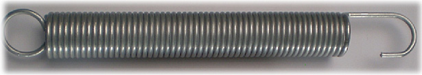

AMS fabrique différents types de ressorts de traction :
Ressorts de traction
Les diamètres de fil utilisés dans la fabrication de ces ressorts sont : de 0,5 mm à 6 mm en série
Nuances matière : ( aciers ) SM, SH, DH, classe II, Inox
Un traitement thermique de revenu est necessaire après enroulement du ressort, cela permet de relaxer les contraintes résiduelles
d'enroulement et d'augmenter la résistance du fil. Lors de cette opération, la géométrie du ressort varie (orientation,
boucle et longueur).
Nous utilisons différents traitements de surface : delta seal, zingage, phosphatation, bézinal, galvanisation
ces procédés garantissent la protection contre la corrosion et la bruyance du ressort.
Ressort en SH galvanisé diamètre du fil 4,0 mm, longueur 170 mm avec noix de fixation en laiton vissée dans le corps |
Ressorts boucles anglaises |
Ressort boucles spécifiques |
|  |
Ressort en SH galvanisé diamètre du fil 4,0 mm, longueur 32mm avec boucles de fixation différentes |
Ressorts boucles spécifiques |
Ressorts double traction |
© 2008-2019 AMS (Ateliers Mécaniques de Saucourt) | Mentions légales | Conditions générales de ventes
création site